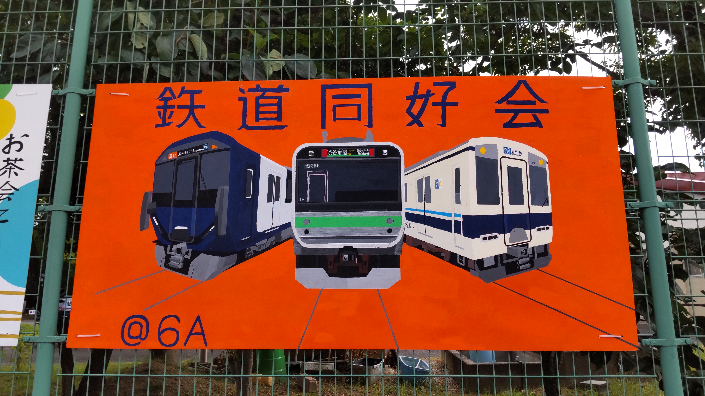
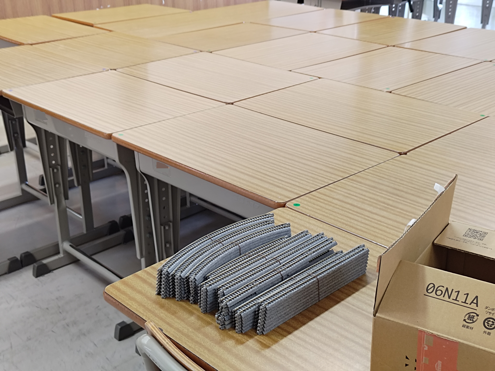
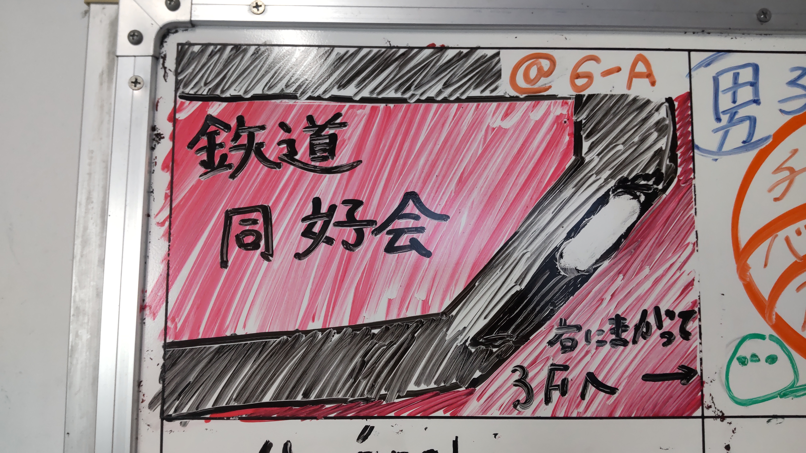
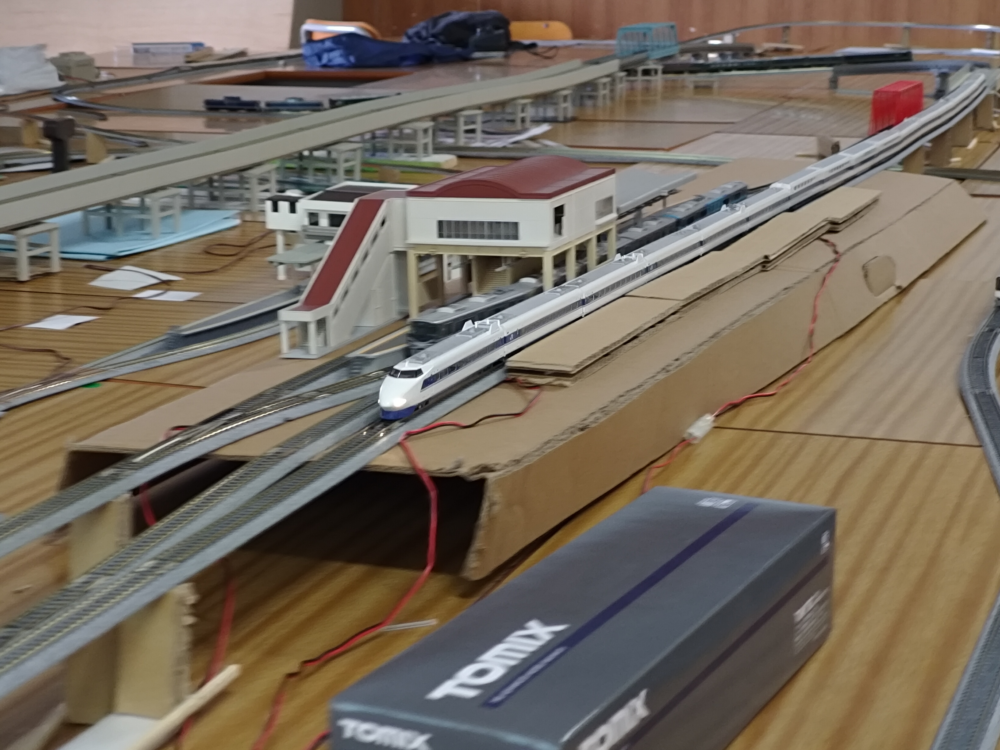
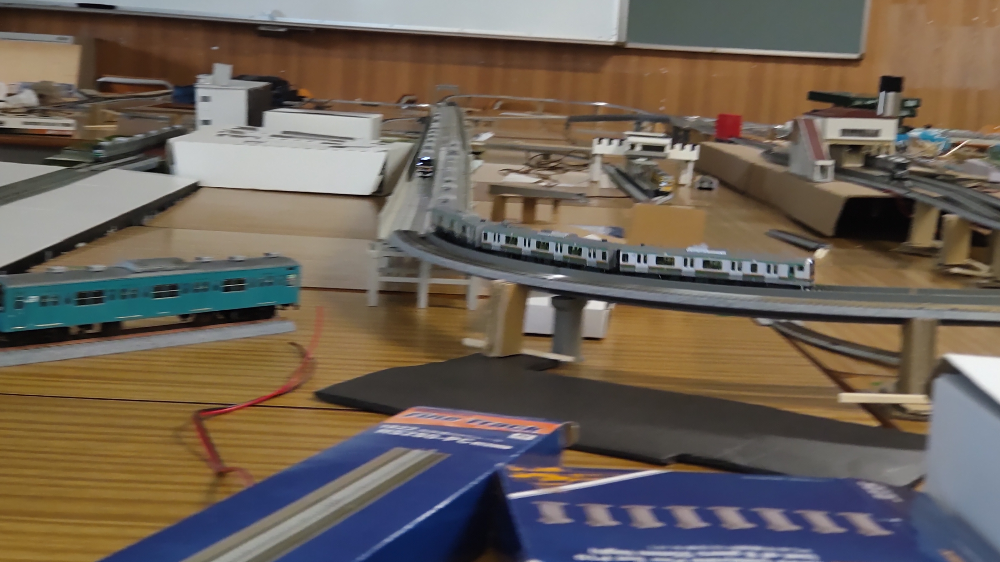
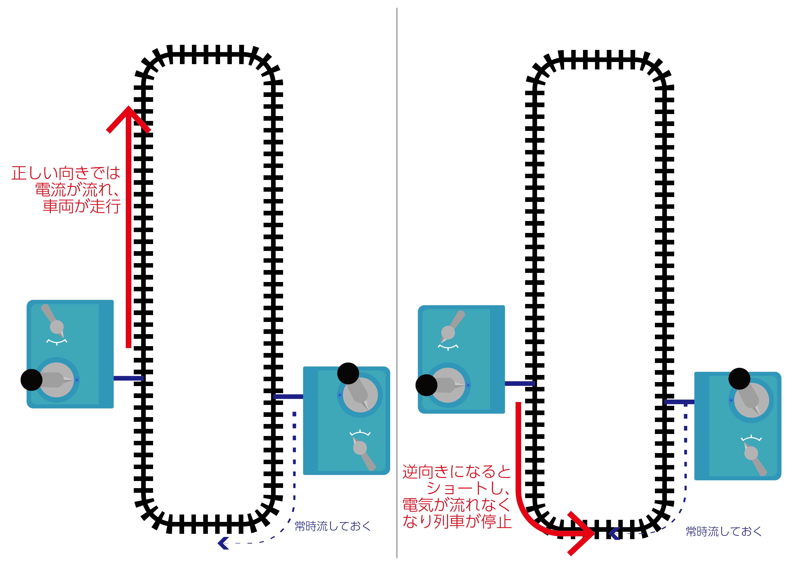
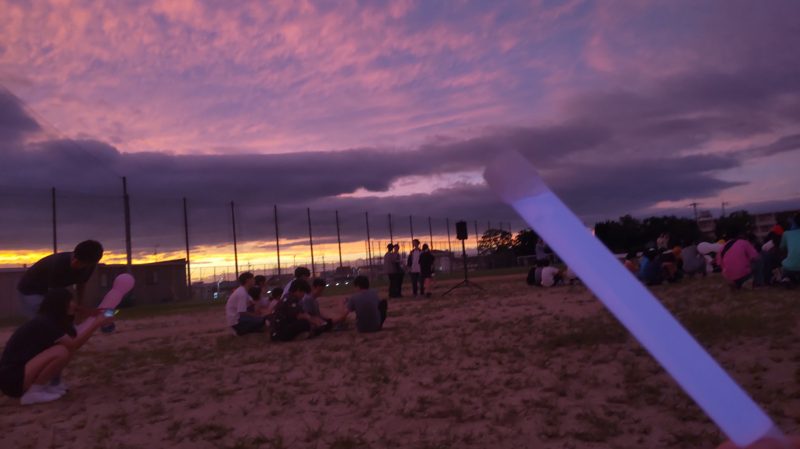

どうもこんにちは。会長です。
お待たせいたしました。 本日は、9月19日～20日で開催され、当同好会も出展した学園祭のまとめをしたいなぁと思います。
～立て看板終わるの早ない?～
夏休みの作業の中でも特に重要なのが立て看板製作です。例年〆切ギリギリに終わるのですが、なぜか今年は製作してくれた方の人数が多くて、1週間ぐらい前に終わりました。これはキセキですよ。本当に。製作してくれた皆様、本当にありがとうございました。

本年度の立て看板
～会場設営-レイアウトがデカすぎた～
突然ですが、今年の机の請求個数をご存じでしょうか。80個です（笑）。1クラス40人(我々が使用した6年生では1クラス30人)なので、一般学級2クラス分の机を請求したことになります。当ブースに来てくださった方ならわかるかと思いますが、やたらNゲージレイアウトが大きいなぁと感じたのではないでしょうか。当同好会では、Nゲージの線路や車両のほとんどを会員の皆様に持ち寄っていただいております。そのため、その年に在籍している会員さんの持っている線路の本数によってレイアウトの大きさが左右されることになります。今年は線路を沢山持っている方が複数名おられたので、調子に乗ってほぼ全部の線路を使う設計図を描いたところ、とんでもない個数の机が必要になってしまいました(￣∇￣;)ﾊﾊﾊ。各発団への机の配分を調整して頂き、何とか確保することができました。ありがたい。
そして、忘れてはいけないのが設営ですね。机の個数が多ければ多いほど、設営にかかる時間も長くなります。例年60個しかテーブルを請求していない発団が、80個請求するとどうなるでしょうか。はい、そのとおり。設営がギリギリになります。終わんねぇ。

設営中……
また、使用する教室が点呼場所だった6年生の模擬発団さんの準備が終わらなかったらしく、我々が机をセッティングする傍ら作業してらっしゃったので予定していた作業順序を一部変更したよね～と、後からガッツリ登場して頂くY氏と喋っておりました。当の模擬店さんは、学園祭当日特に問題なく出店で来ていたようで、よかったです。
そんなこんなで前夜祭の時刻になっても線路組み立てをしていたため、例年準備が終わった後の試運転タイム(会員さんが好きに車両を走らせられる時間)を十分にとることができませんでした。反省点です……。
さて、一旦会長からは以上です。え?当日の話は? ﾜﾀｸｼ、当日他発団のシフトが立て込みに立て込みまして、ほぼほぼ鉄道に顔を出せてないんです……。ということで、当日ほぼほぼ鉄道に従事できたY氏にバトンタッチいたします。(←一応扱いが会長の呟きなので、ﾜﾀｸｼもこんな感じでコメントにて参加しますね。)
どーも。ブログでは初めまして、識別:Yです。 会長から学園祭の話をブログに書いてくれと頼まれたので当日の話を少しさせて頂きます。
学園祭はお楽しみ頂けたでしょうか。今年はNゲージのレイアウトを大きくしたのとともに、昨年配線の都合で泣く泣くやることができなかったNゲージ運転体験も行うことができ、とても良かったかなと私は思います。

学園祭当日の連絡白板です
～当日の話～
実は私、初日に遅刻してたんですよ。(←何してんだよw)15分程度ですが。同好会の発団に来れる会員が全員総務部のシフトがあるのと、私が遅刻してしまったのとで、無人になる可能性があった訳です。 この時に手伝って頂けた友人にはとても感謝しています。貴方がいなければ本当に無人になる所でした。(←ご友人様、本当にありがとうございました。学園祭スタートの時刻になってもY氏が来ないので、滅茶苦茶焦りました。(無人になるのもそうですが、CMにも載せた神経衰弱を彼が持っていたので、どうしようかと思ったものです（笑）))
～ワンオペ～
総務部のせいで私がワンオペになった話もしておきます。
鉄道同好会として、低学年の会員達には同好会にあまり来ずに一年生なら教室発団の方を、二年生なら好きなように回るのをお勧めしているんですよ。なので、いつも鉄道同好会にいることができるメンバーは限られる訳ですね。今年は、私とK氏とN氏ともう1人くらいしかいなかったのですが、なんと私以外全員総務部に所属していまして。問題の総務部ですが、人手が足りず総務部員は学園祭中ほぼシフトが入っていたそうで、同好会にいることができるメンバーが私だけになったんですよ。(←ﾜﾀｸｼ N、開幕から3時間連続勤務やねん、とK氏に自慢したら、私なんて合計2桁時間勤務やで?と言われました。ひえぇ……)
私も自発団のシフトがあったのですが、いろいろあって行かなくて良いことになり、本当にずっと鉄道同好会の発団にいました。いわゆる、ワンオペってやつです。
いやまぁ、これが本当に大変で。運転体験の対応、レイアウトの見張り、車両の入れ替え、お客さんの質問に答える、これを全て私一人で行うのは本当に本当に大変でしたね。卒業生の先輩方にも手伝って頂けたのですが、それでも時間は限られていますので。初日はその疲れからか途中から激しい頭痛に見舞われました。
また、今年も卒業生である2代前の会長がとても大量のNゲージ車両を持ってきてくださいまして。(←めちゃウマ白板アートの、あの先輩です。)走らせていた車両の中結構な割合が卒業生の車両でした。あとは別の卒業生ですけど航空保安大学校のを宣伝と言っておいていった人もいましたね。(←パンフレット置いていかれました。ほしい人、差し上げます。)


学園祭当日の様子
～運転体験～
運転体験についてなんですが、個人的に気になったのは体験される方が車両を見失ってしまうことがあった、ということですかね。レイアウトの構造物が重なってしまう所で止めてしまい、どの車両を動かしていたか分からなくなってしまう、こう言ったことが結構ありました。まぁ個人的には改善したいかな、程度ですが。(←レイアウトの設計上、手前に駅舎を置くための台を取り付けてしまったので、死角が大きくなってしまったのかな……と思います。運転して下さった皆様、見にくくて申し訳ありませんでした。)
～人力ATS～
(会長割込)(ATSとは、実際の鉄道で導入されている、信号無視や速度オーバーの際に自動でブレーキをかけるシステムのことです。) 運転体験用のコントローラーの横に説明を張り付けたり、テープでガチガチに固めたりして動かさないようにしていた方向変更レバーが何らかの理由で反対側へ回り、車両が急に逆走する事案が多発。急な逆向き走行は車両への負荷が物凄いことになるので、対策として導入したのが人力ATSです(なんちゅうネーミングセンスの無さよ)。なんと設計図段階で1周の線路にあらかじめスタッフスペースと体験スペース2か所にコントローラーを接続しており、両スペースから車両を動かせるようにしていたのです。これを利用して、スタッフスペースのコントローラーから、正規方向へ車両が動き出さない程度に微弱の電流を流します。正しい向きに電流が流れ(つまり、正しい方向へ列車が走)れば特に何も起こらないんですが、逆向きに流れ(逆走す)るとショートを起こして自動で電流が流れなくなります。これで、モーターへの負荷軽減に成功(?)したようです。(現場をあまり知らないので他人事感ある喋り口調ですが(笑) 会長の割込、終わり。引き続きY氏のお話をご覧くださいませ。)

人力ATS
～片付け～
今年はレイアウトも机の量も例年より規模が大きいため、例年行なっていた学園祭の後の会員のみでの走行会は行なわずに片付けを始めたんですよ。これがとても英断で。かなりの数の会員で片付けをしましたが、片付けが終わったのは最終下校時刻ギリギリでした。レールは半分ほど会員の私物ですから、一つ一つ誰のものか判別する時間も結構かかったこともあり、今年は危なかったですね。
とまぁ、こんな感じに今年はいろいろありました。まとめると、総務部を許さん(←許して(;_;))、今年は規模が大きかった、来年は少し小さくなる、ということですかね。あとは来年ワンオペにならないように工夫したいです。物理的に無理な気がしなくも無いですが。
以上、識別:Yでした。
はい、Y氏、一瞬でブログを書いてくださりありがとでした。 やはり「識別:」をいちいちつけるとダサいなぁと思いました。どうにかしようと思います(何の話…?)
どうにかする話でいうと、Nゲージレイアウトの大きさもどうにかしようと思います。あまりに大きすぎた。同規模のレイアウトをまた見たいと思ってくださっている方には申し訳ないですが、来年は規模を縮小する予定です。ご了承ください。
ワンオペ(?)もどうにかしたほうがいいですよねぇ。大変なのもそうですし、ワンオペ中の大変だった話を永遠聞くのもアレ(あ、阪神2連覇おめでとうございます。)ですから。ただ、当同好会はシフト制ではないので、どうしようか……1年じっくり考えようと思います。
そんな感じでした。過去一の分量になっちゃった（笑）。ここまでお読みいただいた画面の前のあなた、最後までご覧くださりありがとうございました。
次は何を話そうか(来年の学園祭もお楽しみに)。またご覧ください!

後夜祭。夕焼けが綺麗でした
最後までお読みいただきありがとうございました。